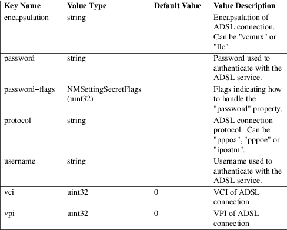
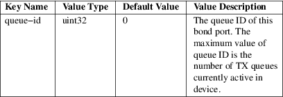

nm-settings-dbus − Description of settings and properties of NetworkManager connection profiles on the D−Bus API
NetworkManager is based on a concept of connection profiles, sometimes referred to as connections only. These connection profiles contain a network configuration. When NetworkManager activates a connection profile on a network device the configuration will be applied and an active network connection will be established. Users are free to create as many connection profiles as they see fit. Thus they are flexible in having various network configurations for different networking needs. The connection profiles are handled by NetworkManager via settings service and are exported on D−Bus (/org/freedesktop/NetworkManager/Settings/<num> objects). The conceptual objects can be described as follows:
Connection (profile)
A specific, encapsulated, independent group of settings describing all the configuration required to connect to a specific network. It is referred to by a unique identifier called the UUID. A connection is tied to a one specific device type, but not necessarily a specific hardware device. It is composed of one or more Settings objects.
Setting
A group of related key/value pairs describing a specific piece of a Connection (profile). Settings keys and allowed values are described in the tables below. Keys are also referred to as properties. Developers can find the setting objects and their properties in the libnm−core sources. Look for the *_class_init functions near the bottom of each setting source file.
The settings and properties shown in tables below list all available connection configuration options. However, note that not all settings are applicable to all connection types. NetworkManager provides a command−line tool nmcli that allows direct configuration of the settings and properties according to a connection profile type. nmcli connection editor has also a built−in describe command that can display description of particular settings and properties of this page.
connection
setting
General Connection Profile Settings.
6lowpan setting
6LoWPAN Settings.
802−1x setting
IEEE 802.1x Authentication Settings.
adsl setting
ADSL Settings.

bluetooth setting
Bluetooth Settings.
bond setting
Bonding Settings.
bridge setting
Bridging Settings.
bridge−port setting
Bridge Port Settings.
cdma setting
CDMA−based Mobile Broadband Settings.
dcb setting
Data Center Bridging Settings.
dummy setting
Dummy Link Settings.
ethtool
setting
Ethtool Ethernet Settings.
generic
setting
Generic Link Settings.
gsm
setting
GSM−based Mobile Broadband Settings.
infiniband setting
Infiniband Settings.
ipv4 setting
IPv4 Settings.
ipv6 setting
IPv6 Settings.
ip−tunnel setting
IP Tunneling Settings.
macsec setting
MACSec Settings.
macvlan setting
MAC VLAN Settings.
match setting
Match settings.
802−11−olpc−mesh setting
OLPC Wireless Mesh Settings.
ovs−bridge setting
OvsBridge Link Settings.
ovs−dpdk setting
OvsDpdk Link Settings.
ovs−interface
setting
Open vSwitch Interface Settings.
ovs−patch setting
OvsPatch Link Settings.
ovs−port setting
OvsPort Link Settings.
ppp setting
Point−to−Point Protocol Settings.
pppoe
setting
PPP−over−Ethernet Settings.
proxy setting
WWW Proxy Settings.
serial setting
Serial Link Settings.
sriov setting
SR−IOV settings.
tc setting
Linux Traffic Control Settings.
team setting
Teaming Settings.
team−port setting
Team Port Settings.
tun setting
Tunnel Settings.
user setting
General User Profile Settings.
vlan setting
VLAN Settings.
vpn setting
VPN Settings.

vrf setting
VRF settings.
vxlan setting
VXLAN Settings.
wifi−p2p setting
Wi−Fi P2P Settings.
wimax setting
WiMax Settings.
802−3−ethernet
setting
Wired Ethernet Settings.
wireguard setting
WireGuard Settings.
802−11−wireless setting
Wi−Fi Settings.
802−11−wireless−security setting
Wi−Fi Security Settings.
wpan setting
IEEE 802.15.4 (WPAN) MAC Settings.
bond−port setting
Bond Port Settings.

hostname setting
Hostname settings.
loopback setting
Loopback Link Settings.
ovs−external−ids
setting
OVS External IDs Settings.
ovs−other−config
setting
OVS Other Config Settings.

veth setting
Veth Settings.
Secret flag types:
Each password or secret property in a setting has an
associated flags property that describes how to
handle that secret. The flags property is a bitfield
that contains zero or more of the following values logically
OR−ed together.
• 0x0 (none) − the system is responsible for providing and storing this secret. This may be required so that secrets are already available before the user logs in. It also commonly means that the secret will be stored in plain text on disk, accessible to root only. For example via the keyfile settings plugin as described in the "PLUGINS" section in NetworkManager.conf(5).
• 0x1 (agent−owned) − a user−session secret agent is responsible for providing and storing this secret; when it is required, agents will be asked to provide it.
• 0x2 (not−saved) − this secret should not be saved but should be requested from the user each time it is required. This flag should be used for One−Time−Pad secrets, PIN codes from hardware tokens, or if the user simply does not want to save the secret.
• 0x4 (not−required) − in some situations it cannot be automatically determined that a secret is required or not. This flag hints that the secret is not required and should not be requested from the user.
/etc/NetworkManager/system−connections or distro plugin−specific location
nm-settings-nmcli(5), nm-settings-keyfile(5), NetworkManager(8), nmcli(1), nmcli-examples(7), NetworkManager.conf(5)